Ogni contributo verifica fonti primarie e indica cosa cambia per il destinatario. Mai marketing, mai pareri travestiti.
Pubblicare le foto dei figli sui social non è una scelta libera di un solo genitore. Con un recente provvedimento, il Garante Privacy ha qualificato lo sharenting come trattamento …
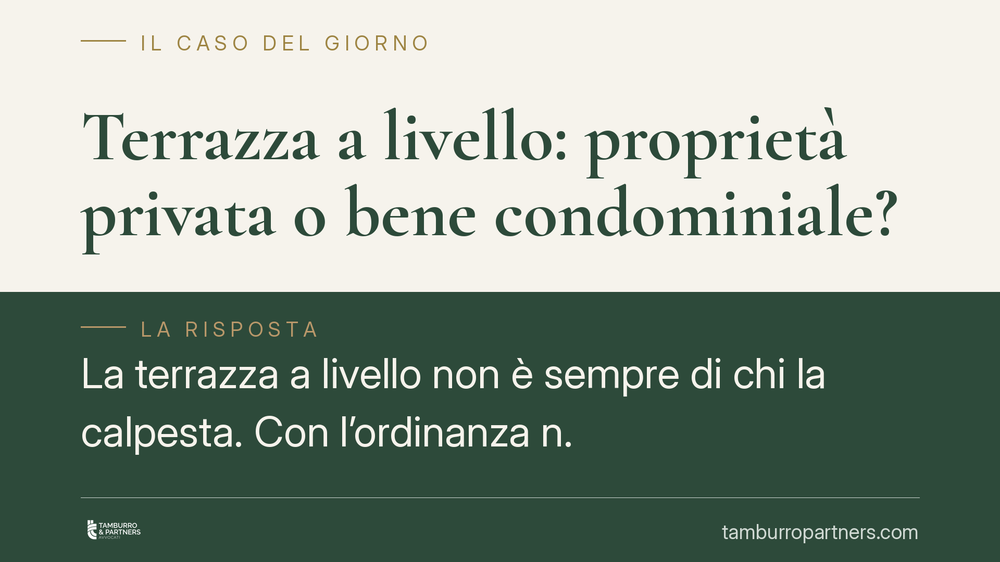
La terrazza a livello non è sempre di chi la calpesta. Con l'ordinanza n. 5253/2026 la Cassazione ribadisce che, se svolge funzione di copertura dell'edificio, si presume condomini…
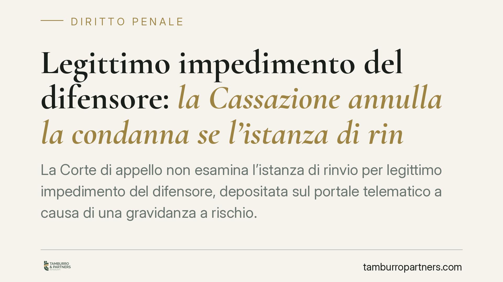
La Corte di appello non esamina l'istanza di rinvio per legittimo impedimento del difensore, depositata sul portale telematico a causa di una gravidanza a rischio. La Cassazione an…
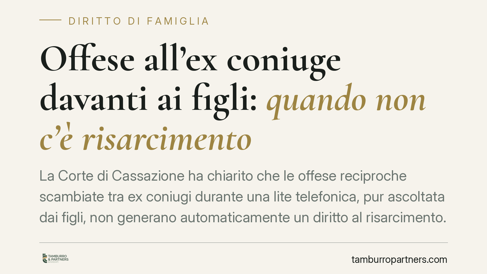
La Corte di Cassazione ha chiarito che le offese reciproche scambiate tra ex coniugi durante una lite telefonica, pur ascoltata dai figli, non generano automaticamente un diritto a…
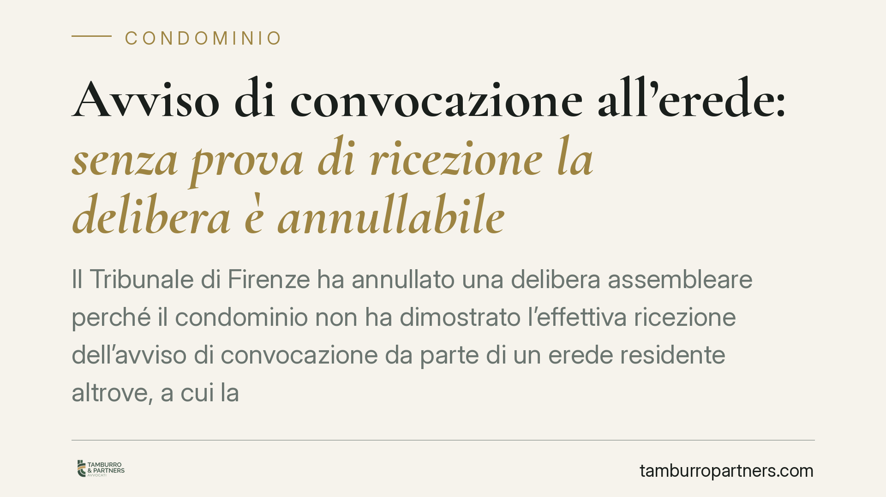
Il Tribunale di Firenze ha annullato una delibera assembleare perché il condominio non ha dimostrato l'effettiva ricezione dell'avviso di convocazione da parte di un erede resident…
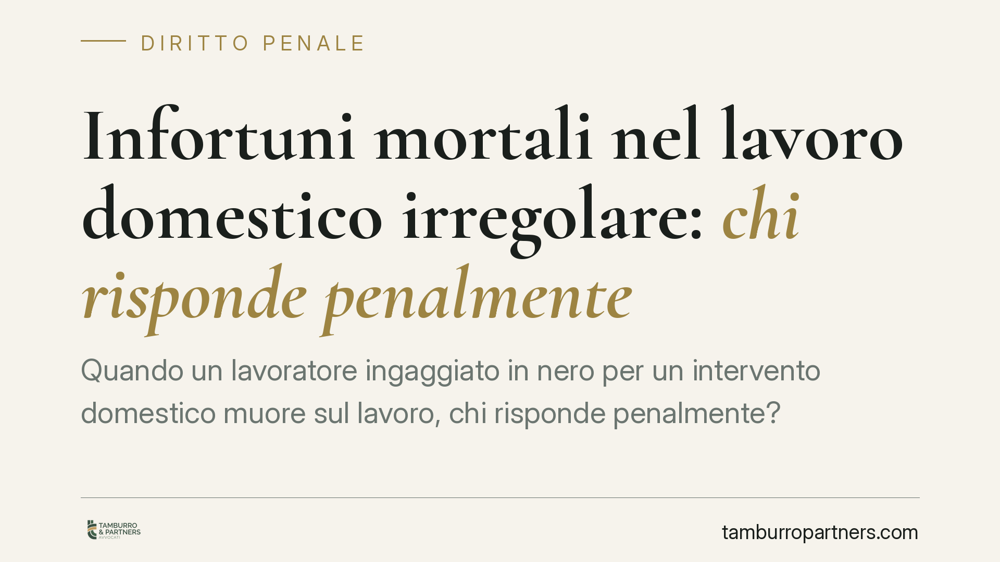
Quando un lavoratore ingaggiato in nero per un intervento domestico muore sul lavoro, chi risponde penalmente? La Corte di Cassazione ribadisce un principio essenziale: la responsa…
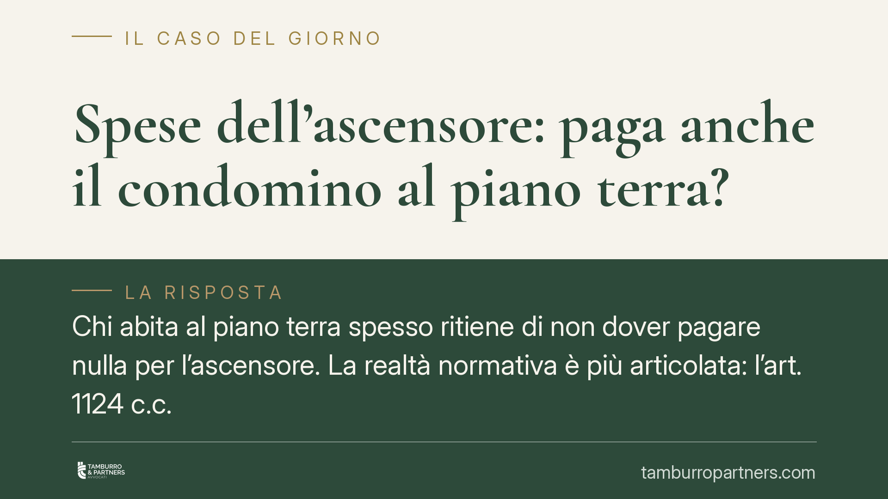
Chi abita al piano terra spesso ritiene di non dover pagare nulla per l'ascensore. La realtà normativa è più articolata: l'art. 1124 c.c. distingue tra spese di impianto, manutenzi…
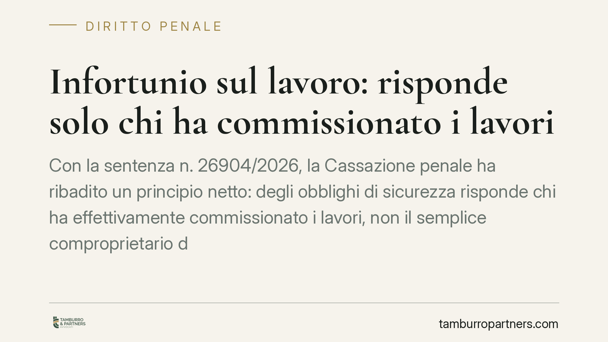
Con la sentenza n. 26904/2026, la Cassazione penale ha ribadito un principio netto: degli obblighi di sicurezza risponde chi ha effettivamente commissionato i lavori, non il sempli…
Le chiamate moleste su WhatsApp configurano stalking aggravato anche se l'apparecchio originario non esiste più. La Cassazione chiarisce che l'aggravante dei mezzi informatici o te…
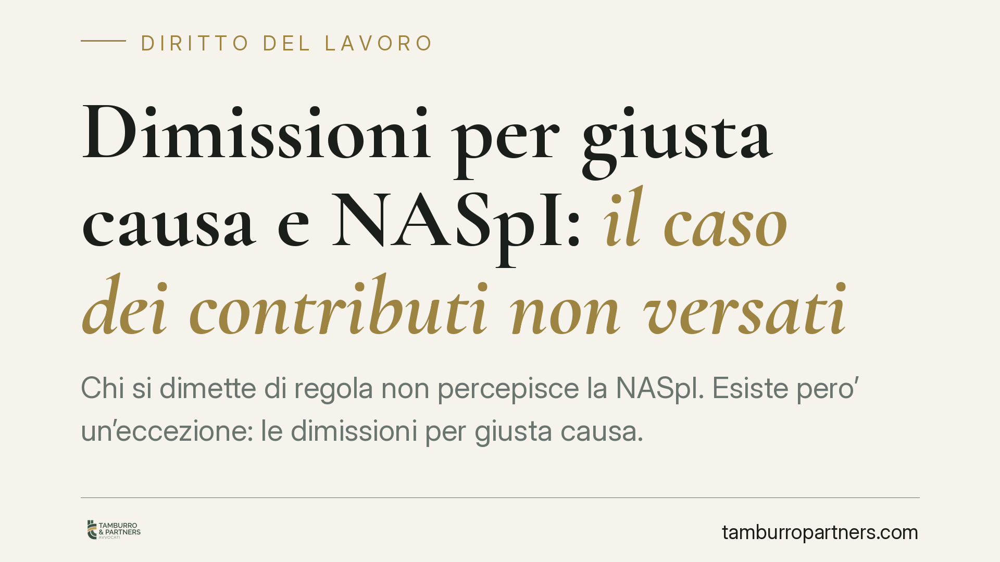
Chi si dimette di regola non percepisce la NASpI. Esiste pero' un'eccezione: le dimissioni per giusta causa. Quando il datore non paga stipendio o contributi, il lavoratore puo' re…
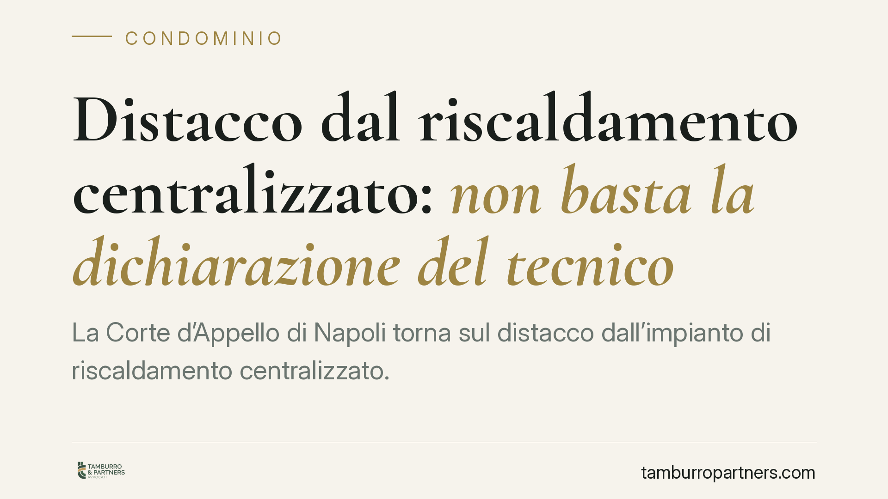
La Corte d'Appello di Napoli torna sul distacco dall'impianto di riscaldamento centralizzato. È un diritto del singolo condomino, non soggetto ad autorizzazione dell'assemblea, ma …
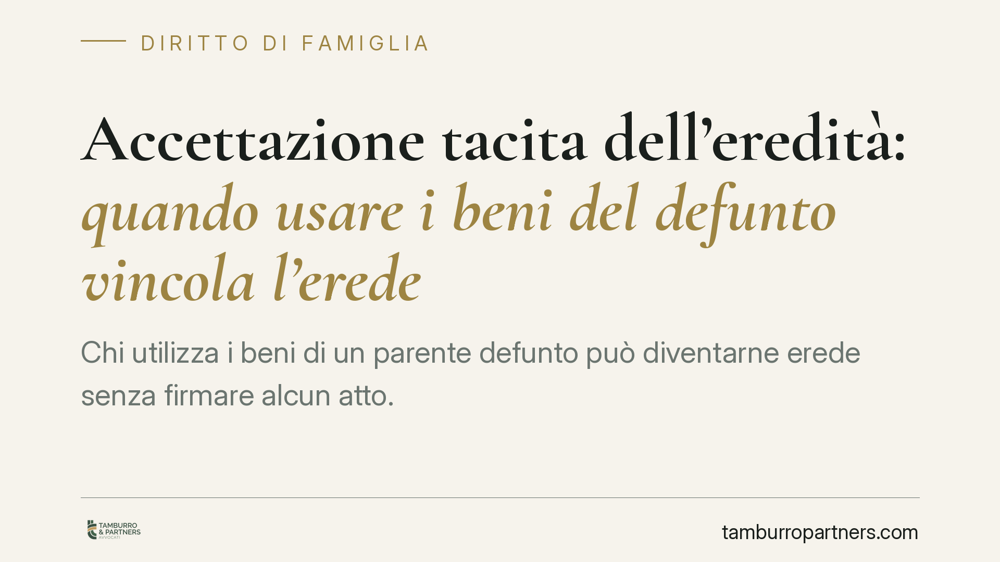
Chi utilizza i beni di un parente defunto può diventarne erede senza firmare alcun atto. Il nostro ordinamento prevede infatti l'accettazione tacita dell'eredità: comportamenti con…
Chi eredita un immobile scopre spesso che non basta comportarsi da erede: per vendere, ipotecare o far valere l'acquisto verso terzi occorre trascrivere l'accettazione dell'eredità…
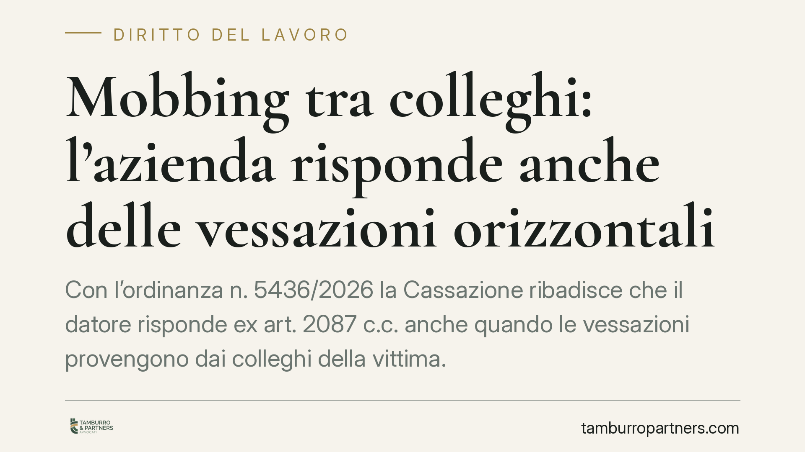
Con l'ordinanza n. 5436/2026 la Cassazione ribadisce che il datore risponde ex art. 2087 c.c. anche quando le vessazioni provengono dai colleghi della vittima. Confermata una conda…
Una foto di un bambino nudo non è, di per sé, pornografia minorile. Secondo un orientamento giurisprudenziale consolidato, il reato sussiste solo quando l'immagine è prodotta o det…
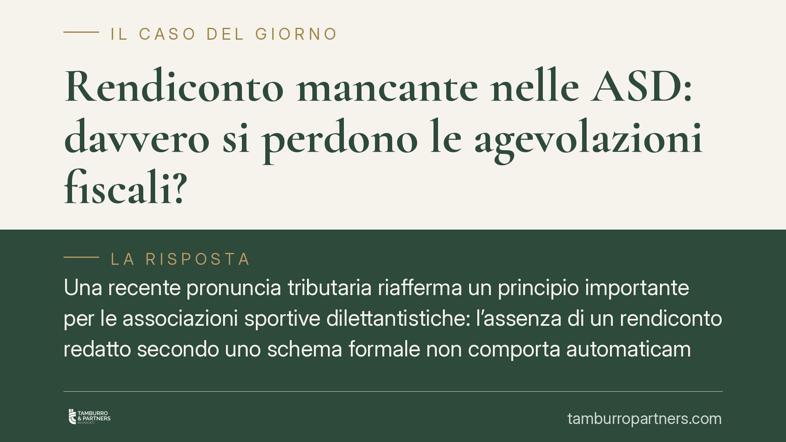
Una recente pronuncia tributaria riafferma un principio importante per le associazioni sportive dilettantistiche: l'assenza di un rendiconto redatto secondo uno schema formale non …
Un operaio ritenuto dal medico aziendale inabile agli sforzi e adibito a mansioni entro i 4,5 kg viene filmato in palestra mentre solleva fino a 80 kg. Il licenziamento per giusta …
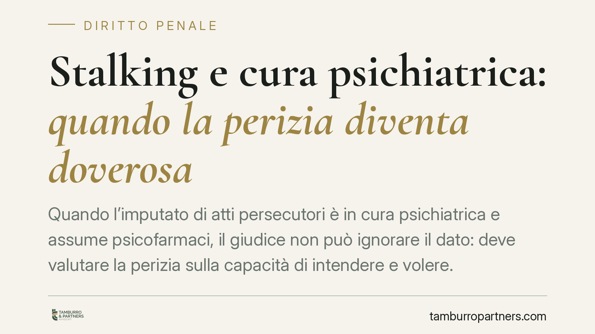
Quando l'imputato di atti persecutori è in cura psichiatrica e assume psicofarmaci, il giudice non può ignorare il dato: deve valutare la perizia sulla capacità di intendere e vole…
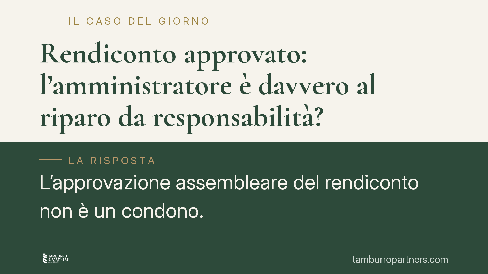
L'approvazione assembleare del rendiconto non è un condono. Anche quando sono decorsi i trenta giorni per impugnare la delibera, il condominio conserva la facoltà di far valere la …
La Corte d'Appello di Ancona ha affermato che i messaggi scambiati in una chat WhatsApp privata e chiusa tra colleghi restano protetti dalla segretezza della corrispondenza. Non po…
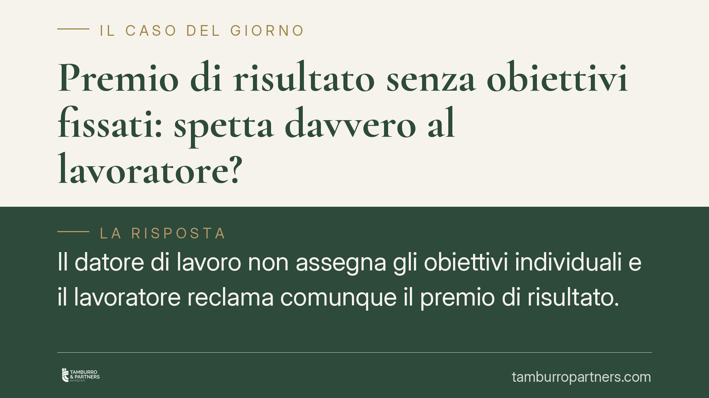
Il datore di lavoro non assegna gli obiettivi individuali e il lavoratore reclama comunque il premio di risultato. Un recente orientamento della Corte di Cassazione esclude l'autom…
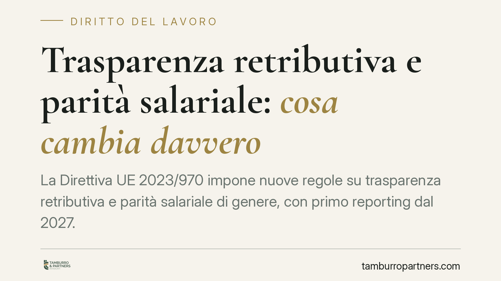
La Direttiva UE 2023/970 impone nuove regole su trasparenza retributiva e parità salariale di genere, con primo reporting dal 2027. Il recepimento italiano è atteso, ma diversi obb…
Un condominio riceve una multa per rifiuti conferiti male nel proprio mastello, ma l'autore materiale resta ignoto. Una pronuncia di merito annulla la sanzione: senza identificazio…
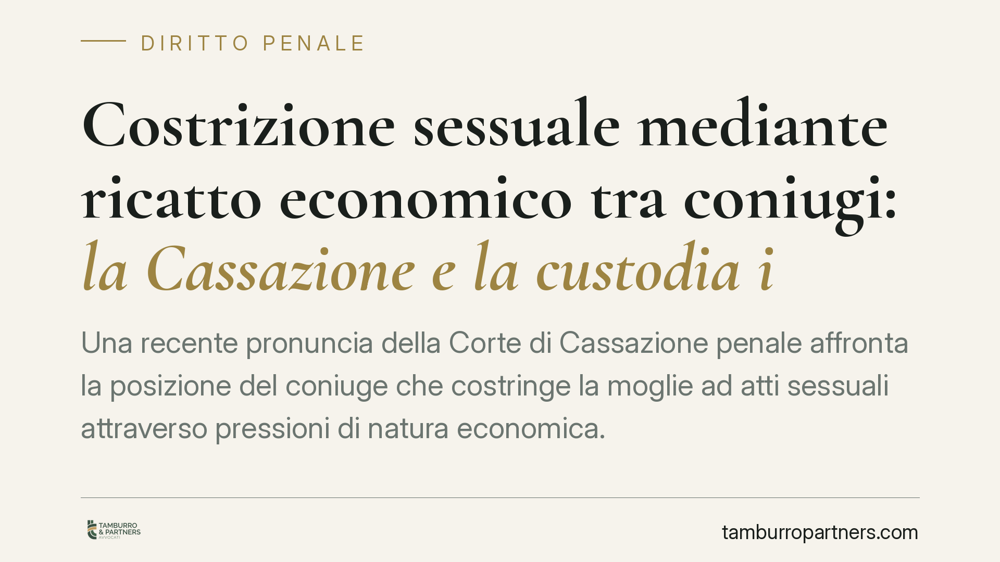
Una recente pronuncia della Corte di Cassazione penale affronta la posizione del coniuge che costringe la moglie ad atti sessuali attraverso pressioni di natura economica. La decis…
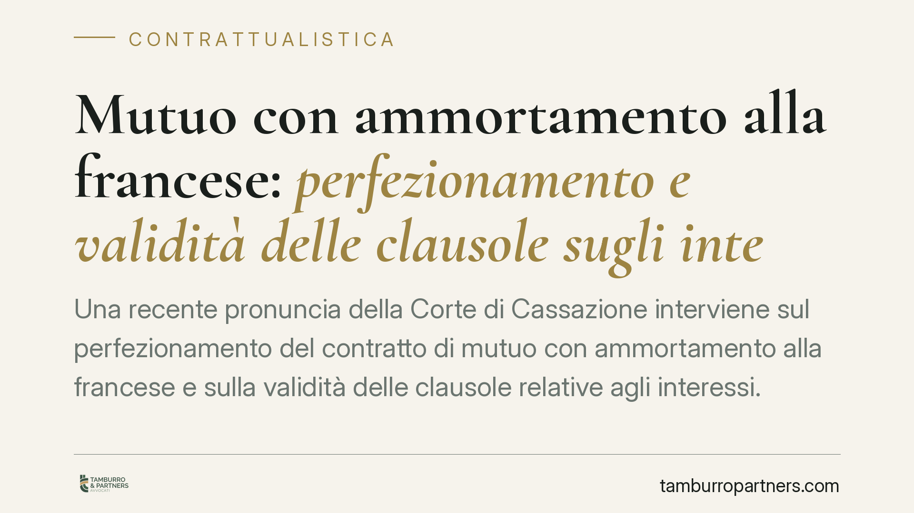
Una recente pronuncia della Corte di Cassazione interviene sul perfezionamento del contratto di mutuo con ammortamento alla francese e sulla validità delle clausole relative agli i…
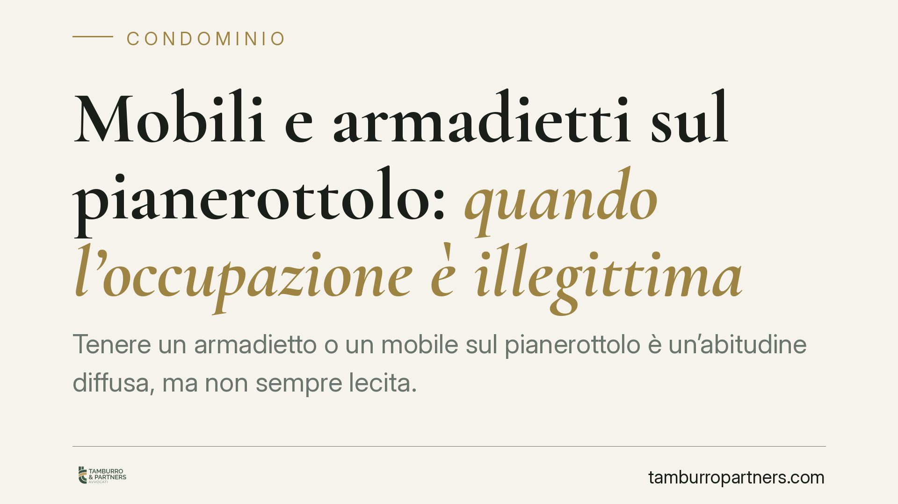
Tenere un armadietto o un mobile sul pianerottolo è un'abitudine diffusa, ma non sempre lecita. La giurisprudenza consolidata della Cassazione ricorda che l'uso delle parti comuni …
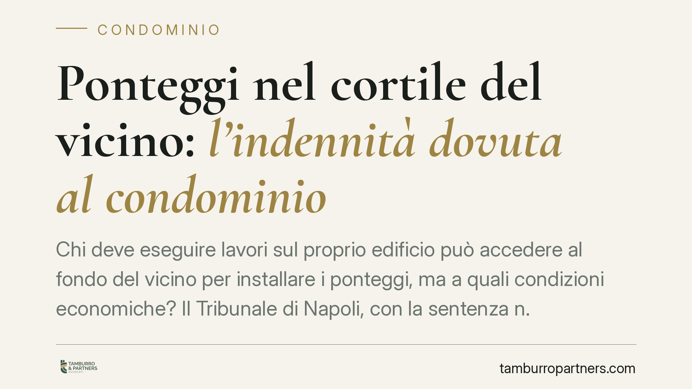
Chi deve eseguire lavori sul proprio edificio può accedere al fondo del vicino per installare i ponteggi, ma a quali condizioni economiche? Il Tribunale di Napoli, con la sentenza …
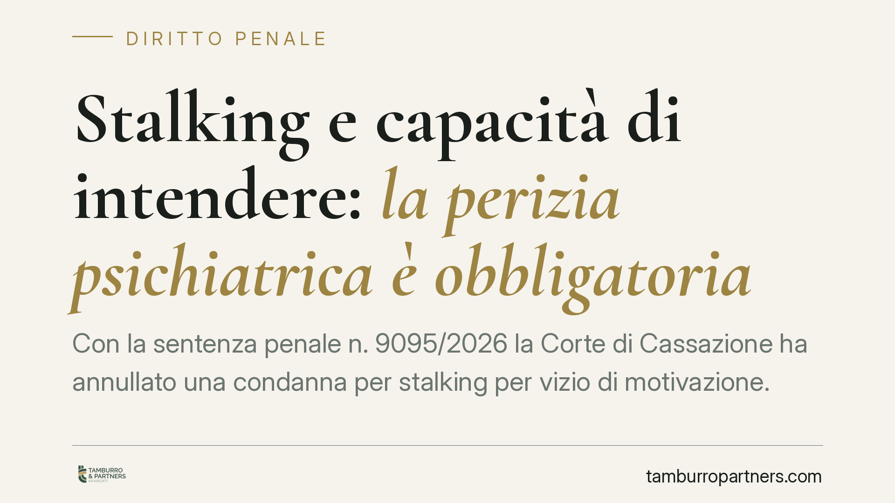
Con la sentenza penale n. 9095/2026 la Corte di Cassazione ha annullato una condanna per stalking per vizio di motivazione. In presenza di documentazione sanitaria che attesta dist…
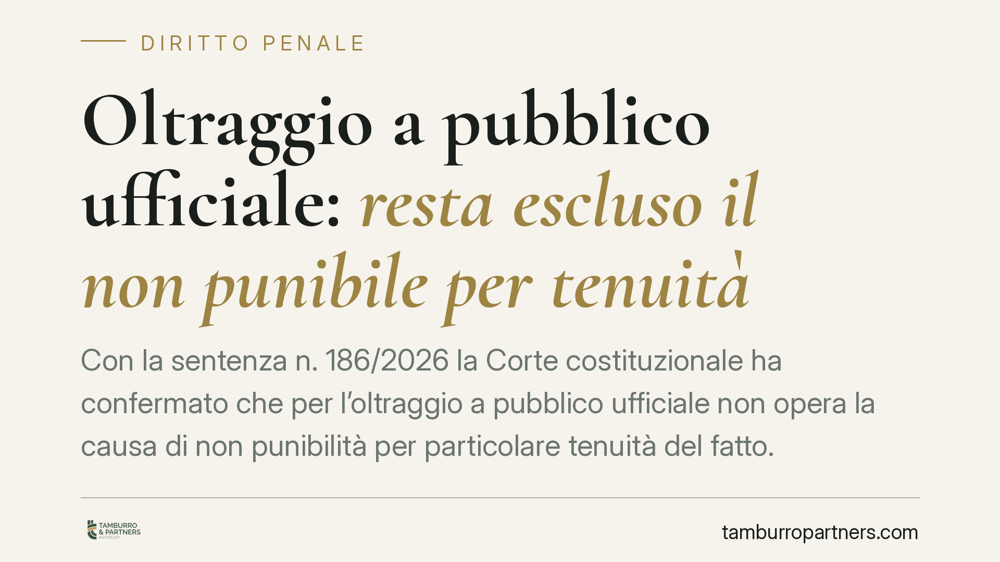
Con la sentenza n. 186/2026 la Corte costituzionale ha confermato che per l'oltraggio a pubblico ufficiale non opera la causa di non punibilità per particolare tenuità del fatto. U…
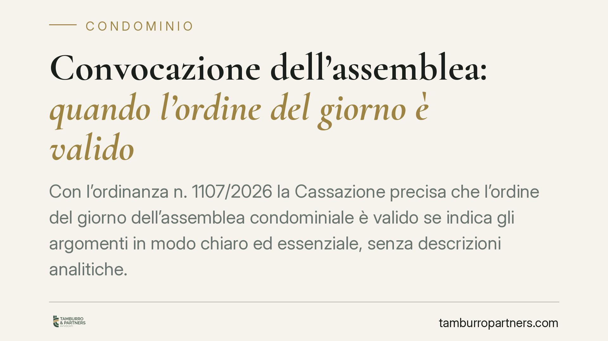
Con l'ordinanza n. 1107/2026 la Cassazione precisa che l'ordine del giorno dell'assemblea condominiale è valido se indica gli argomenti in modo chiaro ed essenziale, senza descrizi…